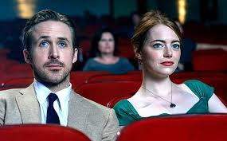

La La Land filminin İncelemesi

Damien Chazelle'in yönettiği, başrollerinde Emma Stone ve Ryan Gosling’in yer aldığı bu modern müzikal; aşk, tutku ve fedakârlık üzerine etkileyici bir hikaye sunuyor.
Film, Los Angeles'ta yolları kesişen bir caz müzisyeni ve oyuncunun hayallerine ulaşma çabasını konu alıyor. Özellikle açılış sahnesi ve “City of Stars” sahnesi unutulmaz.
Görsellik, müzikler ve renk geçişleri filmi adeta bir rüya gibi yapıyor. Ancak finaliyle seyirciyi duygusal olarak ters köşeye yatırıyor.
La La Land, sadece bir aşk hikayesi değil; bazen hayatın hayallerimizi ne kadar zorladığını da anlatan bir film.
The Grand Budapest Hotel filminin İncelemesi

Wes Anderson’ın yönetmenliğini üstlendiği The Grand Budapest Hotel, 1930’ların Avrupa’sında geçen, renkli ve stilize bir görsel şölen sunan benzersiz bir film. Hikaye, otelin konsiyerji Gustave H. ile genç lobici Zero’nun maceraları etrafında şekilleniyor. Film, karmaşık bir miras davası, dostluk, aşk ve sadakat temalarını ustalıkla işlerken, Anderson’ın imzası haline gelmiş simetrik kareler ve canlı renk paletiyle dikkat çekiyor.
Film, nostaljik atmosferi ve detaylara verilen özen sayesinde seyirciyi adeta zamanda yolculuğa çıkarıyor. Komik ve dokunaklı anlar arasındaki denge, karakterlerin derinliği ve diyalogların zekâsıyla birleşerek izleyiciyi içine çekiyor. Ayrıca Alexandre Desplat’ın müzikleri, filmin büyülü havasını tamamlıyor.
The Grand Budapest Hotel, sadece bir film değil; aynı zamanda sinema sanatına sevgiyle yapılmış bir saygı duruşu. Hem görsel hem de anlatı açısından özgün bir deneyim arayanlar için kesinlikle izlenmesi gereken bir başyapıt.